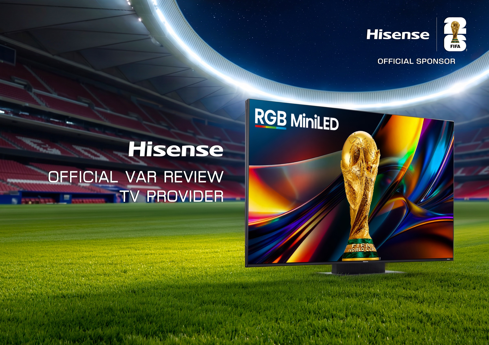

案例发生了什么



海信把 RGB-Mini LED、VAR 显示和国际转播场景绑定，让“赛事级显示”成为消费者理解画质和技术可靠性的具体证据。
案例启示
案例启示
关键动作
- 在专业赛事环境展示核心显示技术。
- 将裁判、转播与家庭大屏建立一条可信的技术链。
- 以连续三届世界杯建立长周期的海外品牌记忆。
传播与商业机制
传播路径
以“FIFA 赞助 / 显示技术”为资源起点，进入官方赛事资产、品牌内容、产品/服务、零售或会员触点，让赛事权益转化为用户可接触、可讨论或可参与的内容。
商业承接
不把曝光直接等同销售，重点观察权益可见度、用户参与、产品/服务使用与商业转化的分层变化，并区分品牌自报、平台数据与可独立核验结果。
可复用的方法硬件品牌最有效的赛事表达，是把“高规格”翻译成消费者可判断的体验标准。
适用条件、风险与证据
- 需要明确权益能被调用的范围，而不是只记录赞助级别。
- 至少准备内容与商业两条承接线，防止资源只在比赛画面里出现。
- 复盘时区分赛事可见度、用户参与和实际业务结果，不能相互替代。
核验记录可将已核动作作为内部判断基础；涉及投放规模、销售结果或合作细则时，仍应以品牌、平台或权利方的一手发布为准。 当前记录：已核（海信官方）；素材状态：已归档官方赛事与产品物料。
品牌与权威来源物料
这里只展示可追溯到品牌、权利方、官方账号或明确注明原始出处的真实物料；研究图卡不计入案例图片。

资料与来源
官方资料、结果数据与下一步
已验证事实
- 2026 年 6 月 9 日，海信披露达拉斯国际广播中心（IBC）启用；FIFA 主席因凡蒂诺在现场通过海信 RGB MiniLED 电视体验 VAR。
- 2026 年 6 月 15 日，海信进一步确认其为本届世界杯官方 VAR Review TV Provider，赛事技术角色与消费级显示产品被放进同一传播链。
可追溯的结果
- 当前官方材料验证了技术身份与现场部署，但没有披露 VAR 终端数量、使用频次或由此带来的零售转化。
原始来源
- Hisense Global · 2026-06-09Hisense RGB MiniLED TV Showcases VAR Technology at FIFA World Cup 2026 IBC
- Hisense Global · 2026-06-15Hisense: Official VAR Review TV Provider for FIFA World Cup 2026
来源链接优先指向品牌、权利方或持权媒体官方页面；品牌自述数据按原始定义记录，不视作独立审计结果。